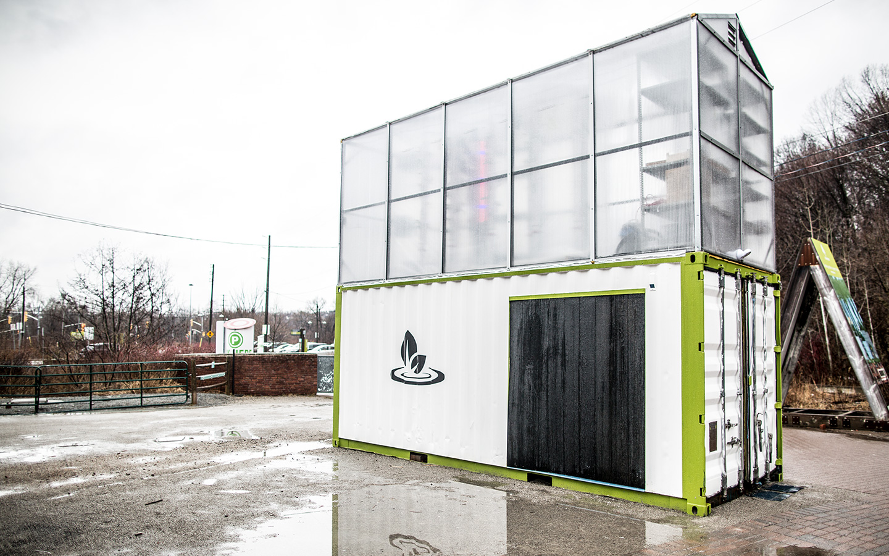

A recent study by the WWF, concluded that between 1970 and 2012 the population of fish and marine vertebrates in the world’s oceans was cut in half. With 90 percent of global fish stocks currently classified as fully- or over-fished, wild-caught seafood production appears to have peaked and is slowly declining. Providing an estimated 17 percent of the world’s animal protein, the diminishing state of fish stocks is becoming a growing threat to food security across the globe. With the oceans no longer being able to provide enough seafood to meet global demand, the industry has turned to aquaculture—fish farming—which now accounts for half of total seafood production. As concerns continue to grow over the sustainability of aquaculture practices in southeast Asia, a technology called aquaponics shows a promising way of producing sustainable seafood as well as organic produce.
The development of aquaculture is fundamental in global food security; however, poor regulation has resulted in: extensive and continuing destruction of coastal wetlands and mangrove forests; excessive use of chemicals such as antibiotics, antifoulants and pesticides; the release of nutrient pollution from fish waste; and significant increases in the demand for fishmeal. This list is not exhaustive; other concerns include the significant risk for the transmission of viruses and parasites to wild fish populations.
Mangrove forests are extremely biodiverse ecosystems, immense carbon sinks, and a vital food source for millions. Their underwater roots naturally protect coastal regions from storms and sea level rise. In the aftermath of the deadly 2004 Indian Ocean tsunami that claimed 227,000 lives, Indonesia undertook large mangrove replanting efforts to protect coastal areas, with minimal success, as millions of hectares of mangrove forest in other parts of southeast Asia are cleared in an unabated fashion. Southeast Asia contains 33.8 percent of the world’s mangroves with nearly half suffering from degradation. Alarmingly, this region is also home to 90 percent of the world’s aquaculture, prompting urgent demand for another sustainable alternative to aquaculture.
Aquaponics is a symbiotic environment that combines aquaculture with hydroponics, the cultivation of plants in a soilless medium. In traditional aquaculture, the buildup of ammonia in densely-populated ponds increases the toxicity of the water. The water is treated with antibiotics and anti-foulant biocides that, when drained, can contaminate our water sources and create food safety issues. In aquaponics, water from the fish tank is sent into a hydroponic system where nitrifying bacteria break down fish waste into nitrates that can then be utilized in plant growing medium as organic fertilizer. The plants filter and improve water quality before the water is recirculated back to the fish, without the need for any chemicals. This closed-loop system can provide organic seafood and fresh produce year-round in almost any climate, with some in the industry claiming their systems consume up to 90 percent less water than traditional farming. Conveniently, this system can be easily replicated in urban environments, eliminating the need for long distance transportation.
Ripple Farms, a Toronto-based start-up, has developed a prototype 160-square-foot vertical farm, producing leafy greens in a LED light-filled greenhouse on top of a shipping container containing large tanks filled with a species of fish known as Tilapia. Pipes draw water from the bottom of the tanks, passing through a radial filter to remove sediment and seperate the uneaten fish food and excrement that can be broken down by the nitrobacteria in the bioreactor. The bacteria breaks the fish waste from ammonia into nitrites then subsequently nitrates, which are key plant nutrients. The nitrate filled water is pumped through a Deep Water Culture system that contains 600 plants growing in floating foam rafts which provide the roots with a consistent nutrient supply. Ripple Farms hopes to expand into a large-scale seafood production facility in the near future and offers workshops and tours of the facility to educate those interested in aquaponics.
 Ripple Farms Pilot Project
Following the legalization of marijuana in Canada, a licensed producer called Green Relief constructed the first aquaponic cannabis growing facility in the world, a 30,000 square-foot building just outside Hamilton, Ontario. The green-roof covered concrete building was largely constructed underground; as a result, growing conditions remain consistent regardless of external weather, significantly reducing heating and cooling costs. The fortress-like structure houses six thousand tilapia in large tanks connected to four growing rooms and a nursery in a closed-loop system that uses less water than a backyard family pool. The plants are grown in floating styrofoam pads under a special lighting system developed by the University of Guelph. Warren Bravo, the CEO of Green Relief says that he is able to get 20 to 30 percent more production out of his plants than conventional methods. Tilapia were chosen as they are a hardy, disease-resistant species that grow best in warm water, which is what cannabis plants prefer. Despite the ability to breed thousands of fish, the company remains focused on selling cannabis and instead donates 350 adult fish to Second Harvest food bank every five weeks.
Bravo is optimistic about the aquaponics industry and recently purchased the North American rights to a cannabis system and the Canadian rights to a vegetable system from Nelson and Pade Inc., the Wisconsin-based inventor of the process. With the U.S. importing more than 90 percent of the seafood it consumes, there is a significant demand for processors to increase domestic seafood production.
While aquaponics significantly improves the sustainability of fish production, issues relating to the vast consumption needs of fish feed remain. Historically wild caught fishmeal was the main ingredient in fish feed, with the aquaculture industry consuming over one-sixth, or 14 million tons, of all commercially caught fish. 90 percent of this fish feed is estimated to be of a high enough quality to be consumed directly by humans. Fortunately, with the price of fishmeal more than doubling in the last 20 years, the industry has started transitioning towards finding cheaper and more sustainable alternative proteins from plants, algae or insects. The recent boost in demand has sparked the development of several commercial facilities in Canada that utilize food waste to grow mealworms and black soldier fly larvae for use in fish feed. A company in Quebec reported that it only requires one kilogram of food to raise 900 grams of insects. Considering insects are commonly eaten by numerous fish species in the wild, the notion of insect based feed has merit. Deepwater Farms is utilizing insect-derived insect protein to grow australian sea bass and microgreens in an LED filled warehouse in Calgary. Going beyond insects, animal feed giant Archer Daniels Midland developed an algae-based source of docosahexaenoic acid (DHA) while Cargill developed a new genetically modified canola that is also suitable for replacing the necessary long chain Omega-3 fatty acids found in fish oil. These developments in aquatic nutrition promise to change the way humans breed, grow, and consume seafood.
Commercial aquaponics is a small but promising industry, with the world’s largest Aquaponics Operation recently being completed in Wisconsin. The system is composed of 40,000 square-foot fish facility and a 123,000 square foot greenhouse that when fully operating will produce 160,000 lbs of salmon and rainbow trout annually and 30,000 heads of lettuce daily. Even with the development of several large-scale producers, aquaponics remains a small percentage of global production.